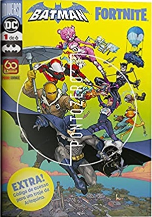

Batman/Fortnite Volume 1

Um dos encontros mais inesperados finalmente acontece nos quadrinhos! Batman é chamado para investigar uma estranha ruptura que surgiu no céu de Gotham. Chegando ao local, se depara com a Arlequina, que decide se jogar dentro do misterioso fenômeno. Enquanto o Homem-Morcego avalia o que está acontecendo, é atacado à traição e acaba sendo atraído para dentro da ruptura. Despertando em outro lugar, o Cavaleiro das Trevas se vê sendo obrigado a lutar por sua vida e, ao mesmo tempo, reencontra um rosto conhecido... Para todo fã do jogo que é uma das maiores sensação atuais, descubra o que acontece quando Batman entra no universo de Fortnite! Batman/Fortnite: Zero Point 1